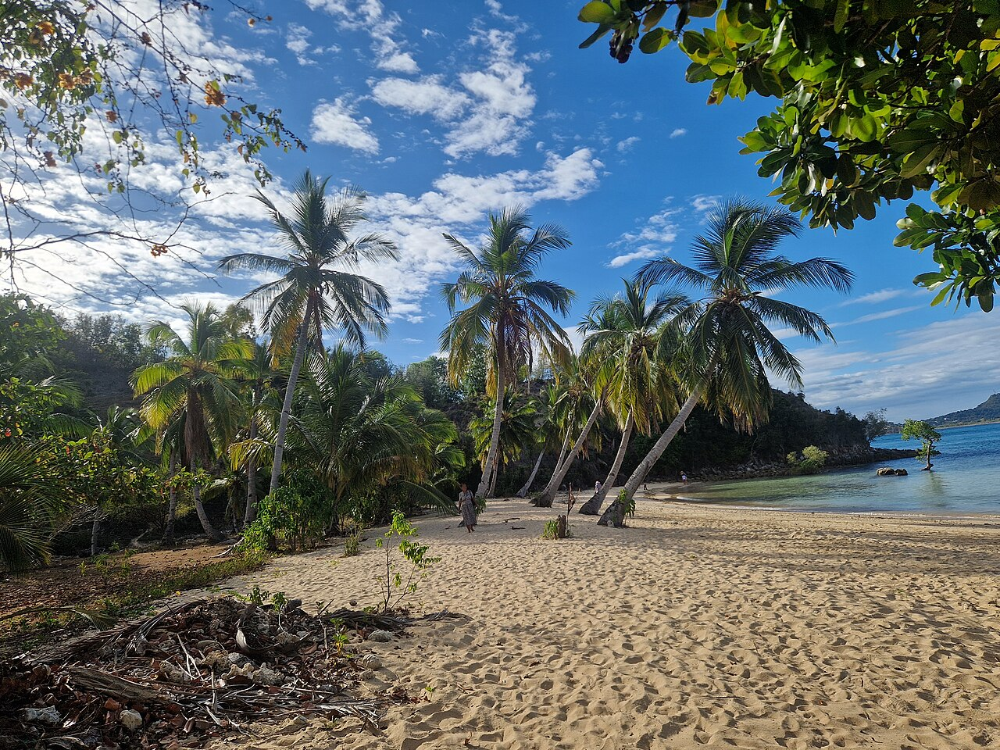

Interviste di viaggio · Madagascar
Nosy Be, otto mesi tra oceano e foresta
Daniele racconta il suo soggiorno in Madagascar attraverso Nosy Iranja, Sakatia, Lokobe e Lemuria Land: quattro luoghi, quattro modi di conoscere l’isola.
Racconto in forma di intervista, rielaborato dalle esperienze condivise da Daniele.
- Daniele
- 8 mesi a Nosy Be
- Isole e foresta

Il mare turchese di Nosy Iranja, il verde di Sakatia, la foresta di Lokobe: a Nosy Be il paesaggio cambia senza perdere il legame con la natura. Daniele ha trascorso otto mesi su quest’isola del Madagascar nord-occidentale. Il suo itinerario comprende anche Lemuria Land e mette vicini spiagge, isole e biodiversità. Gli chiediamo di accompagnarci attraverso i luoghi che compongono questa geografia.
Daniele, da dove cominciamo a conoscere Nosy Be?
Daniele. Ho trascorso otto mesi a Nosy Be, al largo della costa nord-occidentale del Madagascar. Il mare è il suo richiamo più immediato, con le spiagge e le isole vicine. Accanto all’acqua c’è però la vegetazione tropicale, che dà al paesaggio colori e forme altrettanto riconoscibili.
Nosy Iranja, Sakatia, Lokobe e Lemuria Land mostrano questa varietà. Si passa dalla sabbia bianca alla foresta, dalle rive ai percorsi naturalistici. Sono luoghi diversi tra loro, da conoscere per le caratteristiche di ciascuno: il fascino della destinazione nasce anche da questa vicinanza fra ambienti differenti.
Che cosa rende unica l’immagine di Nosy Iranja?
Daniele. È la linea di sabbia tra due isolotti, Nosy Iranja Be e Nosy Iranja Kely. Con la bassa marea il banco emerge e sembra prolungare la spiaggia dentro l’oceano. Intorno, l’acqua passa dall’azzurro al turchese: pochi elementi costruiscono un paesaggio molto riconoscibile, fatto di luce, sabbia e mare.
La sua forma segue la marea. Il tratto emerso cambia con il livello dell’acqua, e anche il modo di avvicinarsi al luogo deve tenerne conto. Iranja è una delle tappe del mio soggiorno a Nosy Be: per comprenderla basta partire da questo incontro fra le isole e il movimento dell’oceano.
E Sakatia, che volto dell’arcipelago mostra?
Daniele. Sakatia affianca alle spiagge il verde, i sentieri e i villaggi di pescatori. Si trova a ovest di Nosy Be e ha un paesaggio nel quale la riva è soltanto una parte. La vegetazione arriva vicino al mare; le coltivazioni aggiungono altri particolari da riconoscere.
Qui trovano spazio anche vaniglia, caffè e orchidee. Conoscere l’isola significa dare attenzione alle piante, alle attività locali e alle persone che la abitano. Le spiegazioni delle guide aiutano a leggere questi dettagli e a guardare oltre il panorama. Sakatia completa così la componente marina con quella di un territorio vivo.

Che cosa cambia nella foresta di Lokobe?
Daniele. Cambia la scala dello sguardo. Sulla spiaggia si segue l’orizzonte; nella foresta sono le foglie, i rami e la vegetazione a occupare la scena. Lokobe, nel sud-est di Nosy Be, è un Parco nazionale che protegge un ambiente di foresta umida, con lemuri, rettili, anfibi e una flora particolare.
È una parte essenziale della natura dell’isola. La sua ricchezza comprende gli animali e l’ambiente che li ospita: per avvicinarsi a un luogo protetto servono attenzione, rispetto delle distanze e delle indicazioni dei gestori. Lokobe aggiunge al viaggio una bellezza diversa da quella delle spiagge, altrettanto legata all’identità del Madagascar.
Come si inserisce Lemuria Land tra queste tappe?
Daniele. Lemuria Land è un parco naturalistico e botanico di Nosy Be. Il percorso introduce specie di lemuri e rettili, insieme alle piante e agli ylang-ylang. I fiori di questi alberi richiamano un’altra caratteristica dell’isola, conosciuta anche per i suoi profumi. È un contesto distinto dalla foresta protetta di Lokobe.
Il mare di Iranja, il verde di Sakatia, Lokobe e Lemuria Land compongono le tappe del mio soggiorno di otto mesi. Mostrano una destinazione che comprende più di una spiaggia. Per continuare a seguire le mie storie, su Instagram mi trovate come @daniele_pepi98.
Ti incuriosisce Nosy Be? Racconta al team Click&Viaggia quali luoghi ed esperienze vorresti conoscere: un confronto informativo può aiutarti a mettere a fuoco la tua idea di viaggio.
Le fotografie illustrano le destinazioni: non sono immagini del gruppo o dei soggiorni di Daniele. I racconti si basano sulle esperienze condivise dal team. Questo articolo non costituisce un’offerta di viaggio.